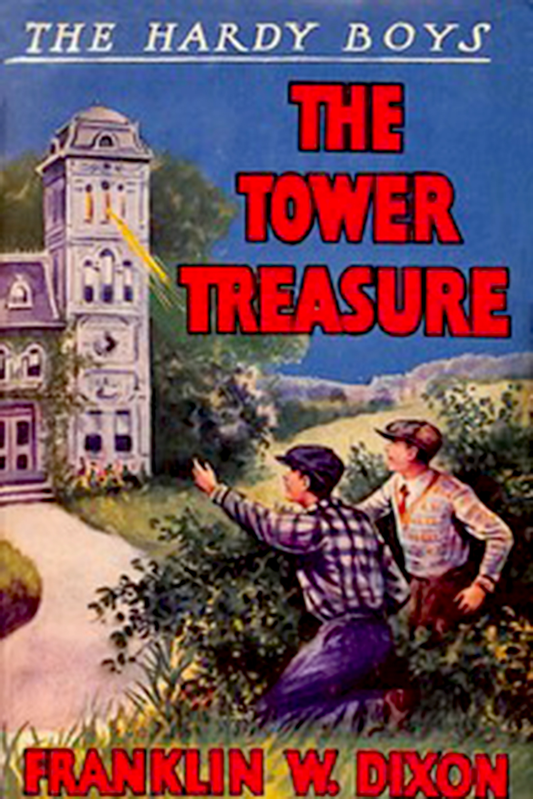

 Experience the action and adventure of 1927 with the original edition of Franklin W. Dixon’s beloved tale, The Tower Treasure. In this, the first book in the Hardy Boys mystery series, Frank and Joe Hardy investigate the theft of securities and jewels from the Tower Mansion. When their friend’s father is accused of the crime, the Hardy Boys are determined to clear his name, find the stolen items, and lay the Tower Treasure mystery to rest. The content of the original 1927 edition of The Tower Treasure has been provided by Project Gutenberg. To learn more about Project Gutenberg, follow this link.
To download The Tower Treasure as an accessible eBook file, click this link or use the button below.
Download the ebookTo download The Tower Treasure as an audiobook, narrated by Kyra Droog, click this link or use the button below.
Download the Audiobook